Design system
Brand
elements
Logos, colours, type, web components, icons, illustrations and photography for every Manage and More project. Sources: the 2020 brand guideline (PDF) and the manageandmore.de codebase.
Read the guidelinesFor AI agents
Logo
Four approved versions. Pick the one with the strongest contrast. Never all-blue, never recoloured, never rearranged. Clear space is at least half the logo height. Logo rules
Do not
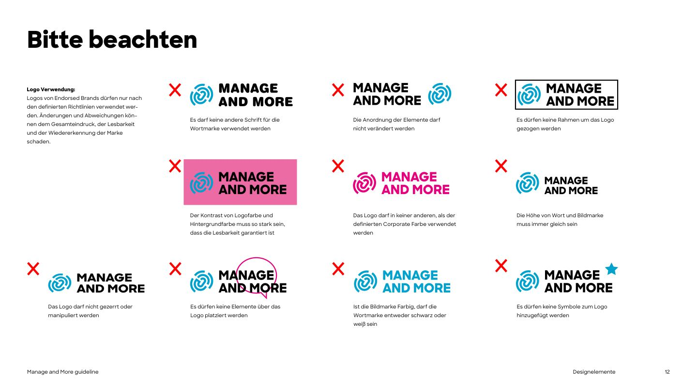
Endorsement
The square BY UNTERNEHMERTUM label shows that Manage and More belongs to UnternehmerTUM. The ENTREPRENEURIAL EDUCATION descriptor always sits to its left. Label rules
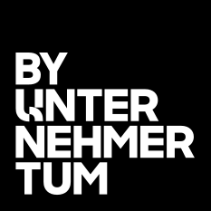
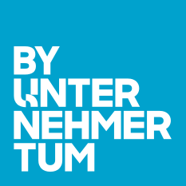
Colour
Blue is the signature, yellow the accent, black and white do the work (on the website: alternating black and white sections). On blue, set text in black: white on blue is only 2.98:1. Blue text on white uses the deeper #007D9E. Colour rules
--mm-color-brand-blue--mm-color-brand-yellow--mm-color-brand-black--mm-color-brand-white--mm-color-brand-grey--mm-color-neutral-black-80--mm-color-neutral-black-60--mm-color-neutral-black-40--mm-color-accessible-blue-textTypography
Two-tone heading · Sharp Sans Extrabold 800 · leading 1.15
The Proven Framework toBuild and Scale.
Body · Sharp Sans Medium 500, 15-20px
House typeface: Sharp Sans Medium and Extrabold (licensed; files in the website repo). Fallback: Work Sans, bundled here. Arial for e-mail and PowerPoint.
Left-aligned text. Headlines Extrabold, body Medium. Section headings 25 to 50px, hero up to 75px. No italic: emphasis comes from the outline line and from Extrabold phrases.
Typography rulesBuilt likemanageandmore.de
Full-bleed hero, alternating black and white sections, arrow-link CTAs, stat rows, rounded photos and cards. Web components · Example page
Explore the components- Founded startups
- 260+founded startups
- Alumni-founded VC funds
- 10+Alumni-founded VC funds
- Capital raised
- > 2.3 B. $Capital raised
Corners
Chips and UI glyphs
- Digital Innovation
- Marketing
- Community & Culture
Icons
Monoline, one colour, square ends. SVGs use currentColor. Icon rules
Illustration and infographics
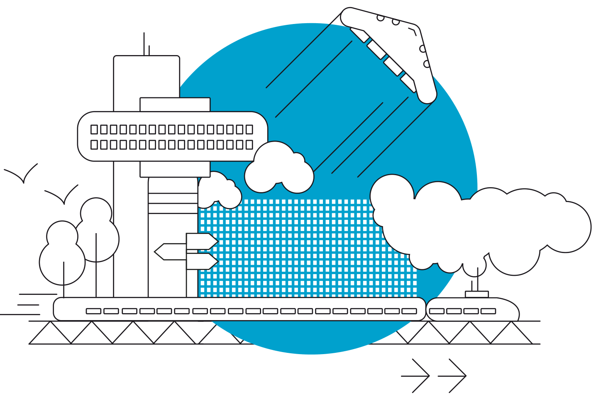
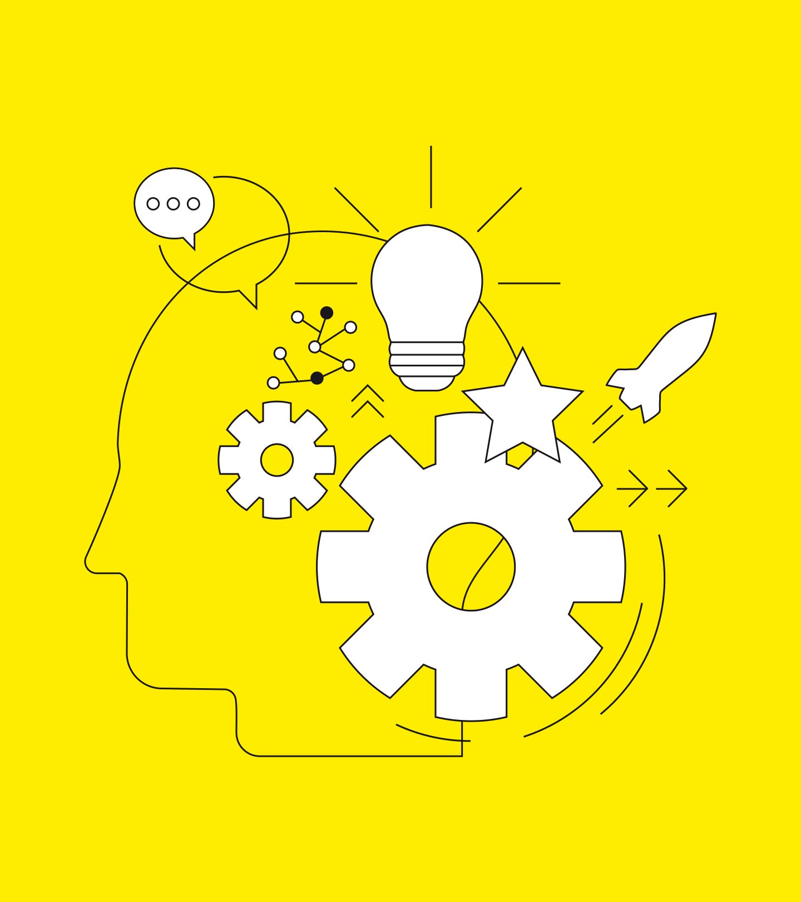
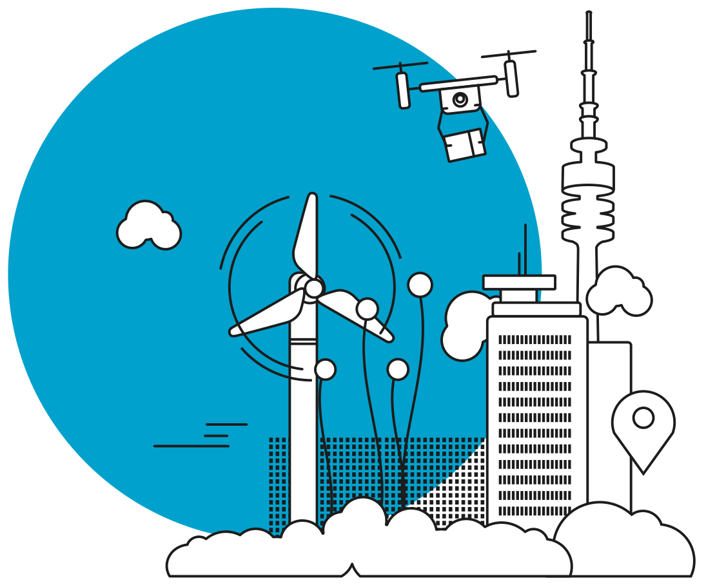
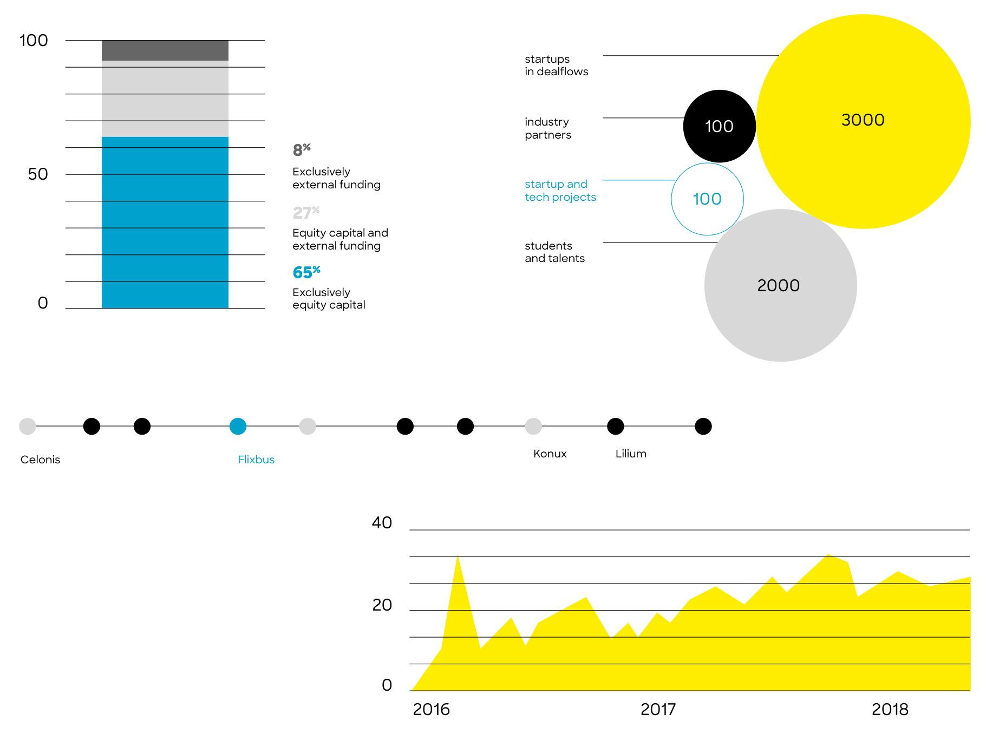
Photography
Documentary, real people, natural light, changing perspectives. B/W and blue tint as highlights. Photo rules
Manage and More's own photos (website)


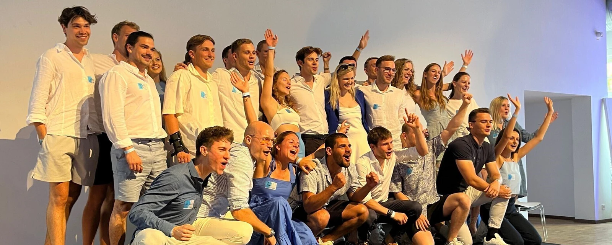
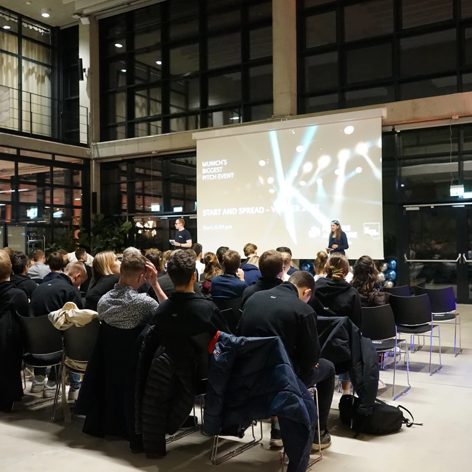


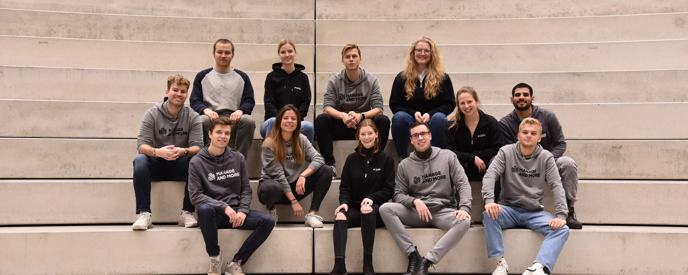
Guideline references (PDF)
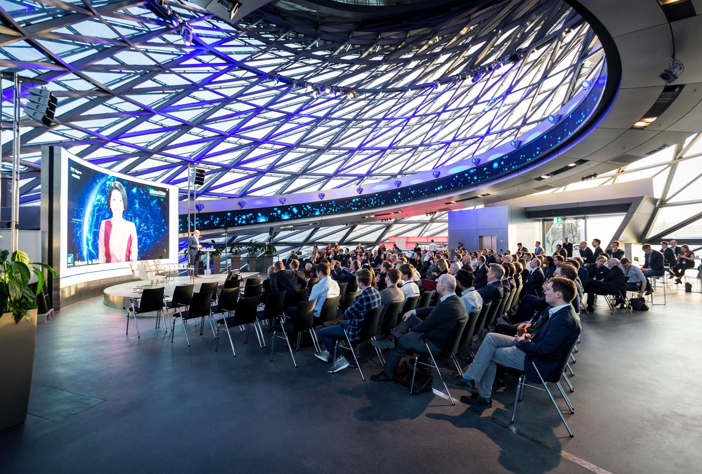
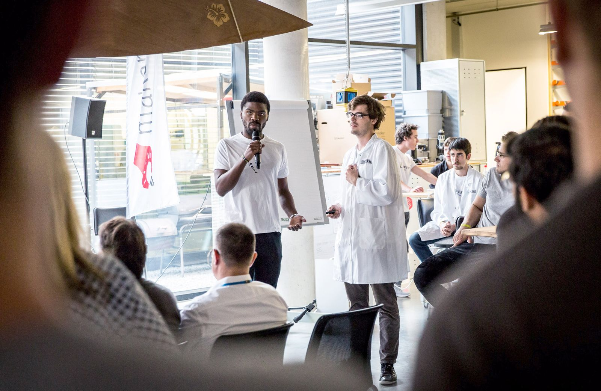
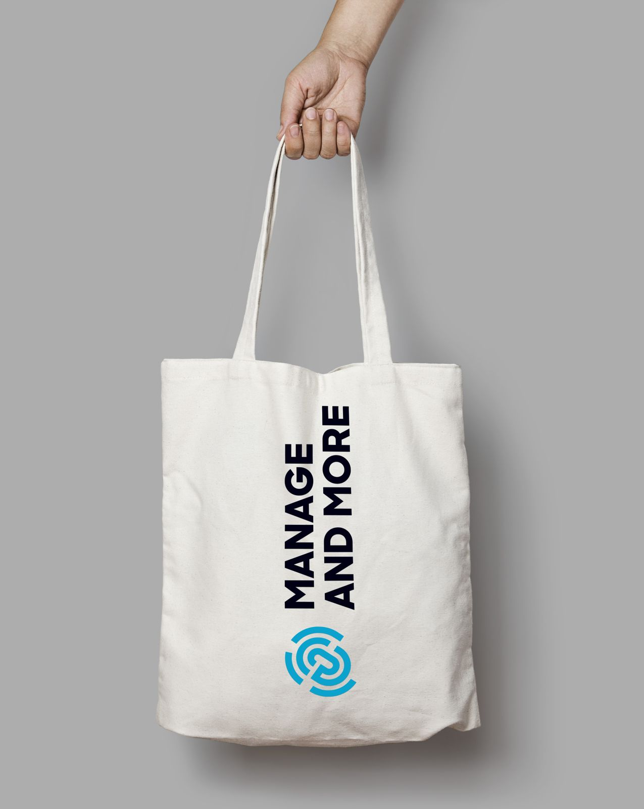
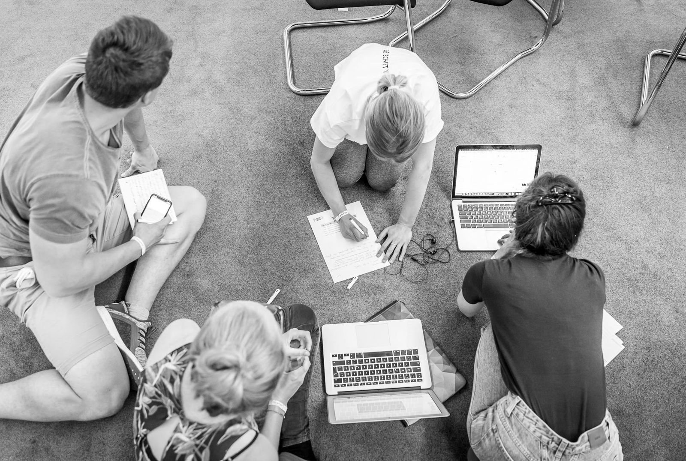
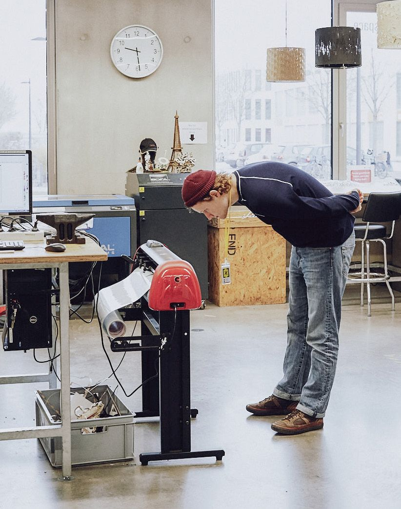